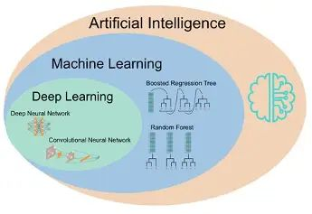

Deep learning for images, signals and sequences
Deep learning is a branch of machine learning that uses neural networks with multiple layers to learn increasingly complex representations from data.
Write the definition, then any 4 or 5 of these points, one line each: Core Idea; Neurons and layers; Deep Learning for Biological Images; Convolutional Neural Networks; Deep Learning for Biological Signals; Transformers and Attention in Biology.
- Core Idea
- Neurons and layers
- Deep Learning for Biological Images
- Convolutional Neural Networks
- Deep Learning for Biological Signals
- Transformers and Attention in Biology
- Training Deep Models
- Strengths and Challenges
Finish with a labelled diagram or table, one real example, one application and a one-line conclusion.
- 2 marks: What is deep learning?
- 5 marks: Explain convolutional neural networks.
- 12 marks: Explain deep learning for images, signals and sequences, including training, strengths and challenges.
Complete notes
Core Idea
- Definition
- Deep learning is a branch of machine learning that uses neural networks with multiple layers to learn increasingly complex representations from data.
- Why biology?
- Biological data are high-dimensional and contain spatial, temporal or sequential patterns that are difficult to capture with a few manually designed rules.
- Workflow
- Biological data → preprocessing → numerical representation → deep neural network → learned representation → prediction.
- Key distinction
- Deep learning can learn useful internal features from data, whereas conventional machine learning often depends more strongly on manually engineered features.

Neurons and layers
A neural network contains interconnected computational units. Each unit combines inputs using weights and a bias and applies an activation function.
Layered learning
Early layers can learn simpler patterns, and deeper layers can combine them into more complex representations.
Representation learning
The model learns a numerical representation that is useful for the task instead of requiring every feature to be specified manually.
Training
Parameters are adjusted by minimizing a loss function using backpropagation and optimization methods such as gradient descent.
Neural Networks and Representation Learning
Deep Learning for Biological Images
- Image data
- Examples include microscopy, histopathology, X-ray, CT, MRI and fluorescence images.
- Challenge
- Images contain many pixels and spatial relationships, with variation in scale, orientation, illumination, sample preparation and biological morphology.
- Tasks
- Classification assigns categories; detection identifies relevant regions; segmentation assigns labels to pixels or regions.
- Applications
- Deep learning can classify cells, detect abnormalities, quantify structures and identify tissue patterns.
Convolutional Neural Networks
- Hierarchical features
- Earlier layers may respond to edges or textures, while later layers can represent more complex shapes or structures.
- Downsampling
- Pooling or related operations can reduce spatial dimensions and create compact representations.
- Outputs
- CNN representations can support image classification, object detection, segmentation and quantitative image analysis.
Deep Learning for Biological Signals
- Signals
- Examples include ECG, EEG, heart rate, blood pressure and continuous glucose measurements.
- Challenges
- Signals may contain noise, missing observations, baseline drift, individual variation and patterns at different time scales.
- Models
- CNNs can learn local temporal patterns; recurrent models can capture sequential dependencies; transformers can model long-range relationships.
- Example
- An ECG can be represented as a numerical time series and processed to classify defined rhythm patterns.
Transformers and Attention in Biology
- Attention
- Attention lets a model assign different importance to different elements of an input when forming a representation or prediction.
- Long-range relationships
- This is useful when distant sequence positions may influence one another.
- Biological language models
- Transformer-based models can learn representations of DNA, RNA and protein sequences from large sequence collections.
- Embeddings
- The learned numerical embeddings can be reused for downstream classification, prediction and similarity tasks.
Training Deep Models
- Training data
- The model learns from examples containing inputs and, in supervised learning, target labels or numerical outcomes.
- Loss
- The loss function measures disagreement between model output and the desired output.
- Optimization
- Backpropagation calculates parameter gradients and an optimizer updates the model parameters.
- Generalization
- The objective is not just low training error; the model should perform well on unseen data.
Strengths and Challenges
- Strengths
- Deep learning can model nonlinear relationships and learn complex representations from high-dimensional images, signals and sequences.
- Data needs
- Large, representative datasets are often valuable, especially for high-capacity models.
- Computational needs
- Training may require substantial compute, storage and careful hyperparameter selection.
- Interpretation
- Complex models can be difficult to interpret, so predictions require appropriate validation and uncertainty assessment.
Figure
- Images
- CNN-based approaches learn spatial patterns and support classification, detection and segmentation.
- Signals
- Deep models can learn temporal patterns from physiological measurements.
- Sequences
- DNA, RNA and proteins can be converted into numerical representations and analysed with deep networks.
- Central idea
- Deep learning creates learned representations that support biological prediction, but model output still requires biological interpretation and validation.